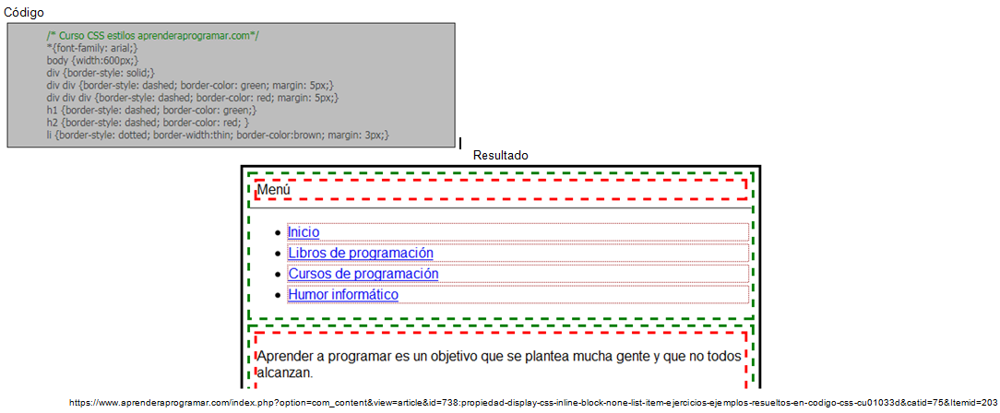

Entre sus ventajas se destaca: Mayores opciones de gráficas y código más simple para muchas tareas. Y como desventajas css3 no tiene compatibilidad 100% con ningún navegador.
Con el atributo Inline-Block el elemento tendrá un comportamiento mezcla entre Inline y Block. Los elementos a los cuales se les aplica inline-block fluyen con el texto y adicional se pueden aplicar valores de ancho y altura, conservando el formato en línea. Con la propiedad Inline-Block, el elemento genera una caja block pero que se comporta como si fuera inline admitiendo otros elementos en la misma línea.
En este ejemplo se observa como se hace uso de la etiqueta div "división" en color verde correspondiente al menú (dentro del cual hay otro div en color rojo con el texto “Menú”, una línea generada por la etiqueta hr y una lista con la etiqueta ul con los items de menú).